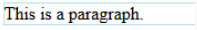
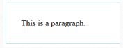
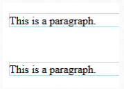
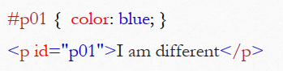
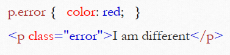

مائده نادهی
26/10/2021
آخرین بهروزرسانی 26/10/2021
0
خواندن این مطلب 5 دقیقه زمان میبرد.
css برای زیبایی و نظم بخشیدن به المنت های html استفاده میشود.
به سه شکل میتوان css به صفحه ی خود اضافه کرد:
CSS border مرز یا border اطراف المنت html را مشخص میکند.
CSS padding فاصله بین متن و border رامشخص میکند.
CSS margin فاصله ی خارج ازborder با سایر المنت هارا مشخص میکند.
برای متعلق کردن یک استایل به یک المنت خاص از ویژگی id استفاده میکنیم.
توجه شود که id باید یونیک باشد یعنی فقط متعلق به یک المنت در صفحه باشد
برای متعلق کردن یک استایل به دسته ی مشخصی از المنت ها از class استفاده میکنیم
